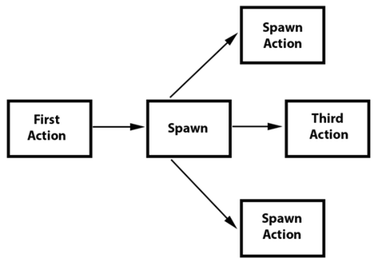

Actions
Action objects are just like they sound. They make a Node perform a change
to its properties. Action objects allow the transformation of Node properties
in time. Any object with a base class of Node can have Action objects performed
on it. As an example, you can move a Sprite from one position to another and
do it over a span of time.
Example of MoveTo and MoveBy action:
// Move sprite to position 50,10 in 2 seconds.
auto moveTo = MoveTo::create(2, Vec2(50, 10));
mySprite1->runAction(moveTo);
// Move sprite 20 points to right in 2 seconds
auto moveBy = MoveBy::create(2, Vec2(20,0));
mySprite2->runAction(moveBy);
// Move sprite to position 50,10 in 2 seconds.
var moveTo = new cc.MoveTo(2, cc._p(50, 10));
mySprite1.runAction(moveTo);
// Move sprite 20 points to right in 2 seconds
var moveBy = new cc.MoveBy(2, cc._p(20,0));
mySprite2.runAction(moveBy);
By and To, what is the difference?
You will notice that each Action has a By and To version. Why? Because
they are different in what they accomplish. A By is relative to the current
state of the Node. A To action is absolute, meaning it doesn't take into
account the current state of the Node. Let's take a look at a specific example:
auto mySprite = Sprite::create("mysprite.png");
mySprite->setPosition(Vec2(200, 256));
// MoveBy - lets move the sprite by 500 on the x axis over 2 seconds
// MoveBy is relative - since x = 200 + 200 move = x is now 400 after the move
auto moveBy = MoveBy::create(2, Vec2(500, mySprite->getPositionY()));
// MoveTo - lets move the new sprite to 300 x 256 over 2 seconds
// MoveTo is absolute - The sprite gets moved to 300 x 256 regardless of
// where it is located now.
auto moveTo = MoveTo::create(2, Vec2(300, mySprite->getPositionY()));
// Delay - create a small delay
auto delay = DelayTime::create(1);
auto seq = Sequence::create(moveBy, delay, moveTo, nullptr);
mySprite->runAction(seq);
var mySprite = new cc.Sprite(res.mysprite_png);
mySprite.setPosition(cc._p(200, 256));
// MoveBy - lets move the sprite by 500 on the x axis over 2 seconds
// MoveBy is relative - since x = 200 + 200 move = x is now 400 after the move
var moveBy = new cc.MoveBy(2, cc._p(500, mySprite.y));
// MoveTo - lets move the new sprite to 300 x 256 over 2 seconds
// MoveTo is absolute - The sprite gets moved to 300 x 256 regardless of
// where it is located now.
var moveTo = new cc.MoveTo(2, cc._p(300, mySprite.y));
// Delay - create a small delay
var delay = new cc.DelayTime(1);
var seq = new cc.Sequence(moveBy, delay, moveTo);
mySprite.runAction(seq);

Basic Actions and how to run them
Basic actions are usually a singular action, thus accomplishing a single objective. Let's take a look at a few examples:
Move
Move a Node over a set period of time.
auto mySprite = Sprite::create("mysprite.png");
// Move a sprite to a specific location over 2 seconds.
auto moveTo = MoveTo::create(2, Vec2(50, 0));
mySprite->runAction(moveTo);
// Move a sprite 50 pixels to the right, and 0 pixels to the top over 2 seconds.
auto moveBy = MoveBy::create(2, Vec2(50, 0));
mySprite->runAction(moveBy);
var mySprite = new cc.Sprite(res.mysprite_png);
// Move a sprite to a specific location over 2 seconds.
var moveTo = new cc.MoveTo(2, cc._p(50, 0));
mySprite.runAction(moveTo);
// Move a sprite 50 pixels to the right, and 0 pixels to the top over 2 seconds.
var moveBy = new cc.MoveBy(2, cc._p(50, 0));
mySprite.runAction(moveBy);

Rotate
Rotate a Node clockwise over 2 seconds.
auto mySprite = Sprite::create("mysprite.png");
// Rotates a Node to the specific angle over 2 seconds
auto rotateTo = RotateTo::create(2.0f, 40.0f);
mySprite->runAction(rotateTo);
// Rotates a Node clockwise by 40 degree over 2 seconds
auto rotateBy = RotateBy::create(2.0f, 40.0f);
mySprite->runAction(rotateBy);
var mySprite = new cc.Sprite(res.mysprite_png);
// Rotates a Node to the specific angle over 2 seconds
var rotateTo = new cc.RotateTo(2.0, 40.0);
mySprite.runAction(rotateTo);
// Rotates a Node clockwise by 40 degree over 2 seconds
var rotateBy = new cc.RotateBy(2.0, 40.0);
mySprite.runAction(rotateBy);
Scale
Scale a Node by 10 over 2 seconds.
auto mySprite = Sprite::create("mysprite.png");
// Scale uniformly by 3x over 2 seconds
auto scaleBy = ScaleBy::create(2.0f, 3.0f);
mySprite->runAction(scaleBy);
// Scale X by 5 and Y by 3x over 2 seconds
auto scaleBy = ScaleBy::create(2.0f, 3.0f, 3.0f);
mySprite->runAction(scaleBy);
// Scale to uniformly to 3x over 2 seconds
auto scaleTo = ScaleTo::create(2.0f, 3.0f);
mySprite->runAction(scaleTo);
// Scale X to 5 and Y to 3x over 2 seconds
auto scaleTo = ScaleTo::create(2.0f, 3.0f, 3.0f);
mySprite->runAction(scaleTo);
var mySprite = new cc.Sprite(res.mysprite_png);
// Scale uniformly by 3x over 2 seconds
var scaleBy = new cc.ScaleBy(2.0, 3.0);
mySprite.runAction(scaleBy);
// Scale X by 5 and Y by 3x over 2 seconds
var scaleBy = new cc.ScaleBy(2.0, 3.0, 3.0);
mySprite.runAction(scaleBy);
// Scale to uniformly to 3x over 2 seconds
var scaleTo = new cc.ScaleTo(2.0, 3.0);
mySprite.runAction(scaleTo);
// Scale X to 5 and Y to 3x over 2 seconds
var scaleTo = new cc.ScaleTo(2.0, 3.0, 3.0);
mySprite.runAction(scaleTo);

Fade In/Out
Fade a Node.
It modifies the opacity from 0 to 255. The reverse of this action is FadeOut
auto mySprite = Sprite::create("mysprite.png");
// fades in the sprite in 1 seconds
auto fadeIn = FadeIn::create(1.0f);
mySprite->runAction(fadeIn);
// fades out the sprite in 2 seconds
auto fadeOut = FadeOut::create(2.0f);
mySprite->runAction(fadeOut);
var mySprite = new cc.Sprite(res.mysprite_png);
// fades in the sprite in 1 seconds
var fadeIn = new cc.FadeIn(1.0);
mySprite.runAction(fadeIn);
// fades out the sprite in 2 seconds
var fadeOut = new cc.FadeOut(2.0);
mySprite.runAction(fadeOut);

Tint
Tint a Node that implements the NodeRGB protocol from current the tint to \
a custom tine.
auto mySprite = Sprite::create("mysprite.png");
// Tints a node to the specified RGB values
auto tintTo = TintTo::create(2.0f, 120.0f, 232.0f, 254.0f);
mySprite->runAction(tintTo);
// Tints a node BY the delta of the specified RGB values.
auto tintBy = TintBy::create(2.0f, 120.0f, 232.0f, 254.0f);
mySprite->runAction(tintBy);
var mySprite = new cc.Sprite(res.mysprite_png);
// Tints a node to the specified RGB values
var tintTo = new cc.TintTo(2.0, 120.0, 232.0, 254.0);
mySprite.runAction(tintTo);
// Tints a node BY the delta of the specified RGB values.
var tintBy = new cc.TintBy(2.0, 120.0, 232.0, 254.0);
mySprite.runAction(tintBy);
Animate
With Animate it is possible to do simple flipbook animation with your Sprite
objects. This is simply replacing the display frame at set intervals for the
duration of the animation. Let's consider this example:
auto mySprite = Sprite::create("mysprite.png");
// now lets animate the sprite we moved
Vector<SpriteFrame*> animFrames;
animFrames.reserve(12);
animFrames.pushBack(SpriteFrame::create("Blue_Front1.png", Rect(0,0,65,81)));
animFrames.pushBack(SpriteFrame::create("Blue_Front2.png", Rect(0,0,65,81)));
animFrames.pushBack(SpriteFrame::create("Blue_Front3.png", Rect(0,0,65,81)));
animFrames.pushBack(SpriteFrame::create("Blue_Left1.png", Rect(0,0,65,81)));
animFrames.pushBack(SpriteFrame::create("Blue_Left2.png", Rect(0,0,65,81)));
animFrames.pushBack(SpriteFrame::create("Blue_Left3.png", Rect(0,0,65,81)));
animFrames.pushBack(SpriteFrame::create("Blue_Back1.png", Rect(0,0,65,81)));
animFrames.pushBack(SpriteFrame::create("Blue_Back2.png", Rect(0,0,65,81)));
animFrames.pushBack(SpriteFrame::create("Blue_Back3.png", Rect(0,0,65,81)));
animFrames.pushBack(SpriteFrame::create("Blue_Right1.png", Rect(0,0,65,81)));
animFrames.pushBack(SpriteFrame::create("Blue_Right2.png", Rect(0,0,65,81)));
animFrames.pushBack(SpriteFrame::create("Blue_Right3.png", Rect(0,0,65,81)));
// create the animation out of the frames
Animation* animation = Animation::createWithSpriteFrames(animFrames, 0.1f);
Animate* animate = Animate::create(animation);
// run it and repeat it forever
mySprite->runAction(RepeatForever::create(animate));
var mySprite = new Sprite(res.mysprite_png);
// now lets animate the sprite we moved.
var animFrames = new Array();
animFrames.push(new cc.SpriteFrame(res.Blue_Front1_png), cc.Rect(0,0,65,81)));
animFrames.push(new cc.SpriteFrame(res.Blue_Front2.png), cc.Rect(0,0,65,81)));
animFrames.push(new cc.SpriteFrame(res.Blue_Front3.png), cc.Rect(0,0,65,81)));
animFrames.push(new cc.SpriteFrame(res.Blue_Left1.png), cc.Rect(0,0,65,81)));
animFrames.push(new cc.SpriteFrame(res.Blue_Left2.png), cc.Rect(0,0,65,81)));
animFrames.push(new cc.SpriteFrame(res.Blue_Left3.png), cc.Rect(0,0,65,81)));
animFrames.push(new cc.SpriteFrame(res.Blue_Back1.png), cc.Rect(0,0,65,81)));
animFrames.push(new cc.SpriteFrame(res.Blue_Back2.png), cc.Rect(0,0,65,81)));
animFrames.push(new cc.SpriteFrame(res.Blue_Back3.png), cc.Rect(0,0,65,81)));
animFrames.push(new cc.SpriteFrame(res.Blue_Right1.png), cc.Rect(0,0,65,81)));
animFrames.push(new cc.SpriteFrame(res.Blue_Right2.png), cc.Rect(0,0,65,81)));
animFrames.push(new cc.SpriteFrame(res.Blue_Right3.png), cc.Rect(0,0,65,81)));
// create the animation out of the frames
var animation = cc.Animation.createWithSpriteFrames(animFrames, 0.1);
var animate = new cc.Animate(animation);
// run it and repeat it forever
mySprite.runAction(cc.RepeatForever(animate));
It's hard to show an animation in text, so please run the example Programmer Guide Sample code to see this in action!
Easing
Easing is animating with a specified acceleration to make the animations smooth. A few things to keep in mind is that regardless of speed, ease actions always start and finish at the same time. Ease actions are a good way to fake physics in your game! Perhaps you want a few simulated physics effects but don't want the overhead and complexity of adding it all for a few very basic actions. Another good example is to animate menus and buttons.
Here are common easing functions displayed over a graph:

Cocos2d-x supports most of the easing function in the above graph. They are also
simple to implement. Lets look at a specific use case. Lets drop a Sprite object
from the top of the screen and make it bounce.
// create a sprite
auto mySprite = Sprite::create("mysprite.png");
// create a MoveBy Action to where we want the sprite to drop from.
auto move = MoveBy::create(2, Vec2(200, dirs->getVisibleSize().height -
newSprite2->getContentSize().height));
auto move_back = move->reverse();
// create a BounceIn Ease Action
auto move_ease_in = EaseBounceIn::create(move->clone() );
// create a delay that is run in between sequence events
auto delay = DelayTime::create(0.25f);
// create the sequence of actions, in the order we want to run them
auto seq1 = Sequence::create(move_ease_in, delay, move_ease_in_back,
delay->clone(), nullptr);
// run the sequence and repeat forever.
mySprite->runAction(RepeatForever::create(seq1));
Run the example Programmer Guide Sample code to see this in action!
Sequences and how to run them
Sequences are a series of Action objects to be executed sequentially. This can
be any number of Action objects, Functions and even another Sequence.
Functions? Yes! Cocos2d-x has a CallFunc object that allows you to create a
function() and pass it in to be run in your Sequence. This allows you to add
your own functionality to your Sequence objects besides just the stock Action
objects that Cocos2d-x provides. This is what a Sequence looks like when executing:

An example sequence
auto mySprite = Sprite::create("mysprite.png");
// create a few actions.
auto jump = JumpBy::create(0.5, Vec2(0, 0), 100, 1);
auto rotate = RotateTo::create(2.0f, 10);
// create a few callbacks
auto callbackJump = CallFunc::create([](){
log("Jumped!");
});
auto callbackRotate = CallFunc::create([](){
log("Rotated!");
});
// create a sequence with the actions and callbacks
auto seq = Sequence::create(jump, callbackJump, rotate, callbackRotate, nullptr);
// run it
mySprite->runAction(seq);
So what does this Sequence action do?
It will execute the following actions sequentially:
Jump -> callbackJump() -> Rotate -> callbackRotate()
Run the example Programmer Guide Sample code to see this in action!
Spawn
Spawn is very similar to Sequence, except that all actions will run at the same
time. You can have any number of Action objects and even other Spawn objects!

Spawn produces the same result as running multiple consecutive runAction()
statements. However, the benefit of spawn is that you can put it in a Sequence
to help achieve specific effects that you cannot otherwise. Combining Spawn and
Sequence is a very powerful feature.
Example, given:
// create 2 actions and run a Spawn on a Sprite
auto mySprite = Sprite::create("mysprite.png");
auto moveBy = MoveBy::create(10, Vec2(400,100));
auto fadeTo = FadeTo::create(2.0f, 120.0f);
Using a Spawn:
// running the above Actions with Spawn.
auto mySpawn = Spawn::createWithTwoActions(moveBy, fadeTo);
mySprite->runAction(mySpawn);
and consecutive runAction() statements:
// running the above Actions with consecutive runAction() statements.
mySprite->runAction(moveBy);
mySprite->runAction(fadeTo);
Both would produce the same result. However, one can use Spawn in a Sequence.
This flowchart shows how this might look:

// create a Sprite
auto mySprite = Sprite::create("mysprite.png");
// create a few Actions
auto moveBy = MoveBy::create(10, Vec2(400,100));
auto fadeTo = FadeTo::create(2.0f, 120.0f);
auto scaleBy = ScaleBy::create(2.0f, 3.0f);
// create a Spawn to use
auto mySpawn = Spawn::createWithTwoActions(scaleBy, fadeTo);
// tie everything together in a sequence
auto seq = Sequence::create(moveBy, mySpawn, moveBy, nullptr);
// run it
mySprite->runAction(seq);
Run the example Programmer Guide Sample code to see this in action!
Clone
Clone is exactly like it sounds. If you have an Action, you can apply it to
multiple Node objects by using clone(). Why do you have to clone? Good question.
Action objects have an internal state. When they run, they are actually
changing the Node objects properties. Without the use of clone() you don't
truly have a unique Action being applied to the Node. This will produce
unexpected results, as you can't know for sure what the properties of the Action
are currently set at.
Let's hash through an example, say you have a heroSprite and it has a position
of (0,0). If you run an Action of:
MoveBy::create(10, Vec2(400,100));
This will move heroSprite from (0,0) to (400, 100) over the course of
10 seconds. heroSprite now has a new position of (400, 100) and more
importantly the Action has this position in it's internal state. Now, say
you have an emenySprite with a position of (200, 200). If you were to apply
this same:
MoveBy::create(10, Vec2(400,100));
to your enemySprite, it would end up at a position of (800, 200) and not
where you thought it would. Do you see why? It is because the Action already
had an internal state to start from when performing the MoveBy. Cloning
an Action prevents this. It ensures you get a unique version Action applied
to your Node.
Let's also see this in code, first, incorrect.
// create our Sprites
auto heroSprite = Sprite::create("herosprite.png");
auto enemySprite = Sprite::create("enemysprite.png");
// create an Action
auto moveBy = MoveBy::create(10, Vec2(400,100));
// run it on our hero
heroSprite->runAction(moveBy);
// run it on our enemy
enemySprite->runAction(moveBy); // oops, this will not be unique!
// uses the Actions current internal state as a starting point.
Correctly, using clone()!:
// create our Sprites
auto heroSprite = Sprite::create("herosprite.png");
auto enemySprite = Sprite::create("enemysprite.png");
// create an Action
auto moveBy = MoveBy::create(10, Vec2(400,100));
// run it on our hero
heroSprite->runAction(moveBy);
// run it on our enemy
enemySprite->runAction(moveBy->clone()); // correct! This will be unique
Reverse
Reverse is also exactly like it sounds. If you run a series of actions, you
can call reverse() to run it, in the opposite order. Otherwise known as, backwards.
However, it is not just simply running the Action in reverse order. Calling
reverse() is actually manipulating the properties of the original Sequence or
Spawn in reverse too.
Using the Spawn example above, reversing is simple.
// reverse a sequence, spawn or action
mySprite->runAction(mySpawn->reverse());
Most Action and Sequence objects are reversible!
It's easy to use, but let's make sure we see what is happening. Given:
// create a Sprite
auto mySprite = Sprite::create("mysprite.png");
mySprite->setPosition(50, 56);
// create a few Actions
auto moveBy = MoveBy::create(2.0f, Vec2(500,0));
auto scaleBy = ScaleBy::create(2.0f, 2.0f);
auto delay = DelayTime::create(2.0f);
// create a sequence
auto delaySequence = Sequence::create(delay, delay->clone(), delay->clone(),
delay->clone(), nullptr);
auto sequence = Sequence::create(moveBy, delay, scaleBy, delaySequence, nullptr);
// run it
newSprite2->runAction(sequence);
// reverse it
newSprite2->runAction(sequence->reverse());
What is really happening? If we lay out the steps as a list it might be helpful:
- mySprite is created
- mySprite position is set to (50, 56)
- sequence starts to run
- sequence moves mySprite by 500, over 2 seconds, mySprite new position (550, 56)
- sequence delays for 2 seconds
- sequence scales mySprite by 2x over 2 seconds
- sequence delays for 6 more seconds (notice we run another sequence to accomplish this)
- we run a reverse() on the sequence so we re-run each action backwards
- sequence is delayed for 6 seconds
- sequence scales mySprite by -2x over 2 seconds
- sequence delays for 2 seconds
- sequence moves mySprite by -500, over 2 seconds, mySprite new position (50, 56)
You can see that a reverse() is simple for you to use, but not so simple in
its internal logic. Cocos2d-x does all the heavy lifting!